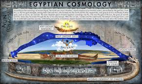

A Terra é plana, porém redonda
Não é de hoje que globalistas se refiram ao modelo do globo como redondo. No entanto, isso é uma forma errada de falar e demonstrar extrema ignorância, evidenciando que nem os próprios defensores da globo, os chamados "homens da ciência moderna", conhecem o suposto lugar onde vivem.
Por que a Terra no modelo do globo não pode ser redonda na geometria?
Na geometria, uma forma redonda é plana e circular (como um disco). No caso da Terra no modelo do globo, ela não é redonda (uma esfera perfeita), mas sim um esferoide oblato, o que significa que ela é achatada nos polos e mais larga no equador. Isso faz com que a Terra tenha uma forma elipsoidal, e não uma forma perfeitamente redonda
definição de redondo
Redondo: na geometria, algo redondo refere-se a uma forma circular. Isso pode ser uma circunferência (a borda de um círculo) ou um disco (a área interna de um círculo). Portanto, no contexto de uma superfície, redondo indica uma forma plana que tem uma curvatura uniforme ao redor de um ponto central, como um círculo.
Por que a Terra plana é redonda na geometria?
a Terra plana é redonda, isso significa que ela é plana e circular, como um disco. Um círculo é sempre redondo, porque sua borda tem uma curvatura uniforme em toda a volta. E, ao mesmo tempo, o círculo é plano porque ele existe em uma superfície plana, sem curvas ou elevações. Então, se a Terra plana fosse redonda, ela teria a forma de um círculo, que é uma forma plana e redonda ao mesmo tempo.
definição de plano
Plano: na geometria, algo plano é uma superfície que não tem curvatura e segue em uma única direção. Por exemplo, uma folha de papel é plana, pois não possui curvaturas perceptíveis e pode ser descrita em duas dimensões (comprimento e largura).
os egipcios
Os egípcios eram um povo antigo que floresceu nas margens do Nilo, desenvolvendo uma civilização marcada por grandes templos, monumentos e um respeito profundo pela vida após a morte. Governados por faraós, organizaram uma sociedade complexa e estruturada, deixando um legado cultural, inovador e científico que influenciou gerações futuras.
os egipcios são inteligentes?
os egípcios eram extremamente inteligentes, até mesmo à frente de seu tempo. As pirâmides são uma prova viva. Com um conhecimento avançado de matemática, engenharia e astronomia, eles ergueram estruturas que desafiam a compreensão moderna. A precisão com que as pedras foram cortadas e encaixadas, e o alinhamento exato com as estrelas, revelam um domínio do espaço e da natureza que ainda nos surpreende. Hoje, com toda a tecnologia disponível, replicar a construção de uma pirâmide com a mesma exatidão e durabilidade seria um desafio monumental. Os egípcios não só construíram essas maravilhas, mas também deixaram um legado que desafia o tempo e o entendimento. Transformaram a pedra em símbolo de poder e transcendência, conectando o faraó ao cosmos e aos deuses. Essa inteligência, que fundia o místico e o prático, ainda ecoa, lembrando-nos de que os antigos, com métodos aparentemente simples, estavam em muitos aspectos à nossa frente — compreendendo e manipulando o universo de uma maneira que parece quase mágica hoje.
o que esse povo acreditava?
A crença egípcia na Terra plana é refletida principalmente no mito de Geb e Nut, onde Geb, o deus da Terra, é representado como deitado sobre o mundo, enquanto Nut, o céu, arqueia seu corpo sobre ele. A forma de Geb é geralmente plana, o que sugere que a Terra não tinha curvaturas, e o céu se estendia como um domo sobre ela. Esse mito, portanto, aponta para uma visão de uma Terra plana com um céu em forma de cúpula.
Além disso, nas representações artísticas egípcias, a Terra é frequentemente mostrada como uma superfície plana, sobre a qual os deuses interagem. Não há evidências de uma Terra esférica nessas representações, que, ao contrário, reforçam a ideia de uma Terra plana com um céu como um domo, sustentado por Shu, o deus do ar.
Outro ponto importante aparece no "Livro dos Mortos", onde a separação entre a Terra e as águas do caos (Nun) é descrita, com o céu funcionando como uma barreira sólida que impede que as águas primordiais se misturem ao mundo físico. Essa visão de uma Terra cercada por águas e coberta por um céu sólido reforça a crença em uma Terra plana.
Esses elementos, combinados, formam uma base sólida para a ideia egípcia de uma Terra plana, sustentada por mitos e representações artísticas que expressam claramente essa visão do universo.
modelo cosmologico egipcio: como era a forma da terra
a prova que a gravidade existe
Quando pedimos para alguém provar a gravidade, algo muito comum que observamos nas pessoas é o ato de pegar um objeto, erguê-lo e soltá-lo. Para elas, a prova da gravidade é o empuxo que faz os objetos caírem, indo direto para o chão. Isso significa que, para elas, a existência da gravidade é comprovada pelo fato dos objetos caírem. Porém, o que elas não sabem é que o motivo pelo qual os objetos caem é causado por uma coisa chamada pressão atmosférica e não pela gravidade.

como a pressão atmosférica aniquila a gravidade?
Se a resposta para os objetos caírem é dada pela gravidade, que seria a única prova observável de algo que se diz real, quando mostramos algo alternativo que realmente é provado, não só na queda dos objetos, mas também ocorrendo de forma independente, isso mostra que não há mais prova de que a gravidade existe e que é outra coisa que causa a queda, invalidando, assim, a única prova observável da existência da gravidade.
como a pressão atmosférica funciona na pratica?
O conceito é simples: para sair do chão, eu exerço energia, como em um salto, superando a pressão atmosférica por um breve período. Depois disso, não consigo mais exercer energia, pois estou no ar. Assim, a pressão atmosférica — o ar, que possui mais energia do que eu — me empurra/escala de volta para o chão.
Agora que sabemos o verdadeiro motivo da queda de objetos e seres vivos, a prova da gravidade foi consequentemente anulada.
O que disse o primeiro homem a subir na estratosfera?
em 1931, Auguste Piccard , durante sua famosa ascensão na estratosfera a bordo de um balão, descreveu a Terra como um "disco plano com as bordas viradas para cima (PALAVRAS DO PRIMEIRO HOMEM A SUBIR NA ESTRATOSFÉRA).
a terra plana na bíblia
versiculos
- Jó 37:18
Por acaso podes, como ele, estender o FIRMAMENTO, que é sólido como um espelho fundido? -
jó 38:14
A terra toma forma como o barro sob o sinete e tudo nela se vê como uma veste. -
jó 26:10
Marcou um limite circular sobre a superfície das águas, onde a luz e as trevas se confinam. -
jó 38:8
Ou quem encerrou com portas o mar, quando este rompeu e saiu da madre; quando eu lhe pus nuvens por vestidura, e escuridão por faixas, lhe tracei limites, pondo-lhe portas e ferrolhos, e lhe disse: Até aqui virás, porém não mais adiante; e aqui se quebrarão as tuas ondas orgulhosas?
significados
Jó 37:18
Veja que, neste versículo, Jó deixa claro que existe um firmamento — algo sólido, ou seja, algo duro e firme em estado sólido. Este versículo também afirma que o firmamento sólido é como um espelho fundido.
jó 38:14
Nesse versículo, não há muito o que comentar, pois ele afirma que a terra assume a forma como o barro sob o sinete
Abaixo, observe uma imagem de como isso se aplica na prática.
jó 26:10
Observe que o versículo deixa claro que foi marcado um limite circular na Terra. Na geometria, um limite circular implica uma forma plana, ou seja, uma superfície bidimensional e reta, com bordas arredondadas, exatamente como em uma circunferencia.
jó 38:8
Este versículo deixa explícito que Deus colocou portas para encerrar o mar e estabeleceu limites para ele, dizendo: 'Até aqui virás, porém não mais adiante.
Precisamos deixar claro que, por mais que a forma da Terra apresentada na Bíblia esteja de certa forma explícita, não existe a palavra 'terra plana'. No entanto, versículos presentes na Bíblia deixam claro a coerência e a exatidão com o modelo da Terra plana, descrevendo exatamente como funciona cada coisa. Isso nos leva a pensar que essa coerência não é uma coincidência, mas sim uma descrição de como é a forma da Terra segundo a Bíblia.
O sol não desce a curva, ele se afasta
Observe abaixo um vídeo desse fenômeno. Quando pegamos uma câmera com extremo zoom e a apontamos para o sol, perceba que ele se afasta até desaparecer e não desce a curva, como descrito no modelo do globo.
a verdade
A verdade é que devemos confiar mais nas coisas observáveis, que podemos reproduzir nós mesmos, como o canal Além do Horizonte Optical faz em seus vídeos e experimentos, como testes de nivelamento e curvatura. Devemos desconfiar daquilo que não pode ser provado e tende a ser duvidoso. Obrigado por ler até aqui. Sugiro que não fique apenas com minhas palavras, pesquise se o que eu disse é verdadeiro ou não é. veja você mesmo. Desperte."